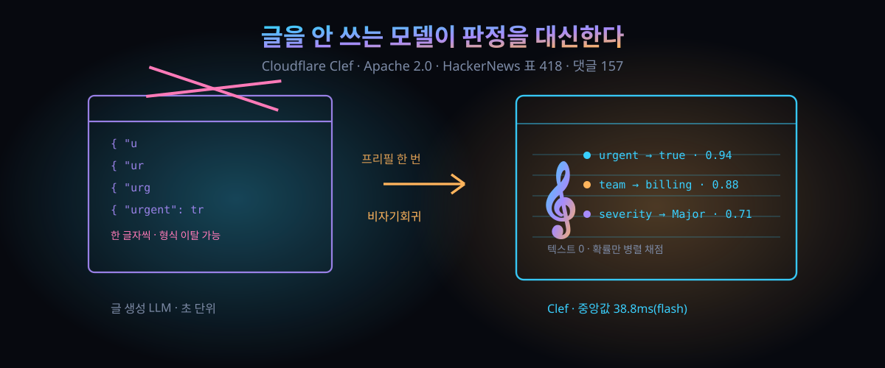

10월 1일 공개, 중앙값 38.8ms — LLM 대신 확률만 뱉는 '판단 모델' 두 종과 벤치 논쟁

결론부터. 에이전트가 "판을 깰까, 말까"를 정하는 자리에, 글 한 줄 쓰지 않는 초고속 전용 모델이 놓이기 시작했다. 클라우드플레어가 10월 1일(현지 시각) 판단 전용 모델 두 종을 꺼냈다. 값은 Apache 2.0, 경로는 자사 클라우드와 로컬 두 갈래다.
해커뉴스에는 올라온 지 8시간 만에 표 418개·댓글 157개가 붙었다(API 실측 2026-10-02). 스레드의 절반은 성능이 아니라 "그 벤치, 믿을 만하냐"를 싸운다.
30초 요약
| 항목 | 내용 |
|---|---|
| 무슨 사건 | 판단 전용 모델 Clef·Clef-flash 공개. Workers AI 호스팅 + Hugging Face 가중치, Apache 2.0 (2026-10-01) |
| 경쟁 구도 | 수주 전 나온 상용 판단 모델(Jev)이 열어 놓은 범주에 정면으로 들어감. 경쟁사 공개 지수에서 자사가 1위라고 주장, API는 그 경쟁사와 호환 |
| 핵심 수치 | 지연 중앙값 Clef 209.3ms / flash 38.8ms, 경쟁 524.1ms (자사 발표 기준) |
| 비결 | Qwen 백본을 얼리고 어댑터만 학습. 판단 단계에서 글자를 생성하지 않는 비자기회귀 |
| 약한 칸 | 공개 비교표 9개 항목 중 2개(When2Call, BRIGHT)는 경쟁 모델이 더 높음 — 표 전체를 자사 우월로 읽으면 안 됨 |
| 논쟁 | 스레드 상위권은 "공개 벤치는 과적합에 취약" 쪽. "차라리 경량 LLM을 쓰겠다"는 실용 반론도 다수 |
1. 무엇이 터졌나
요즘 부쩍 보이는 건 작은 분류기다. 알던 종류와 좀 다르다. "이건 긴급인가, 어느 팀으로 보낼까"를 확률이 딸린 타입 지정 답으로 툭 내미는 모델이고, 업계는 이쪽을 '판단 모델'이라 부르기 시작했다. 값을 적게 부르고, 답은 늘 같은 모양으로 나오고, 분류 항목을 추가해도 재학습이 없다. 밀려드는 이유다.
이 범주가 부각된 건 몇 주 전 화제가 된 상용 판단 모델 한 종(Typesafe AI의 Jev) 덕이다. 10월 1일, 클라우드플레어가 그 판에 정면으로 뛰어들었다. 대형 정밀형 'Clef'와 저지연형 'Clef-flash', 두 종이다.
공개 방식이 성실하다. Workers AI에 엔드포인트로 얹으면서도 가중치를 Hugging Face에 Apache 2.0으로 함께 올렸다 — 로컬에 내려받아 굴릴 수 있다는 뜻이다. API 지킴새는 방금 그 경쟁사와 호환이라고 못 박았다. 갈아끼우기가 전제된 배포다.
함께 공개한 게 하나 더 있다. 강화학습 파인튜닝 서비스인데, 지금은 자사 엔지니어가 붙어서 손잡아 주는 방식이다. 나중엔 고객이 직접 데이터를 모아 학습·재배치까지 하는 셀프서비스 플랫폼이 된단다.
숫자 하나는 미리 깔아 두자. 도메인을 불러와 렌더하고 분류하는 사내 워크플로가 있다. Clef는 2.2초, 같은 흐름의 일반 LLM 중 가장 빠른 gpt-oss-120b는 4.7초였다. 게다가 일반 LLM은 분류 두 개만 돌려준 반면 Clef은 여러 항목의 확률을 한 번에 내놓는다. 발표 원문의 예시는 95%(패션), 85%(전자상거래), 1% 미만(피싱) 같은 모양이다(발표 원문 예시).
2. 왜 대단한가
① 판단에서 '글 생성'을 통째로 뺀 설계
LLM이 JSON을 뱉는 방식은 사실 글을 쓰는 과정이다. 닫는 중괄호가 와야 값이 정해지고, 프롬프트를 아무리 조여도 가끔 형식이 깨진다. Clef의 갈피가 다르다. 백본 Qwen을 '프리필만 한 번' 돌린 뒤, 스키마의 가능한 답들을 병렬로 놓고 그 자리에서 점수를 매긴다. 중간 텍스트가 없으니 한 글자씩 기다릴 일이 없다. 발표는 이 단계를 비자기회귀라 부른다.
② 얼린 몸 위에 얇은 판만 올렸다
학습량은 작다. Clef는 Qwen3.8-27B, Clef-flash는 Qwen3.5-9B를 통째 얼리고 라우팅 헤드와 랭크-256 저랭크 어댑터만 튕겼다. 손실 함수에도 구석이 있다: 유효한 답의 교차 엔트로피에 라벨 스무딩을 얹고, 브라이어 손실로 확률 눈금을 맞춘다. RLCD라는 강화학습 단계도 걸었다. 인접 단계 답엔 부분 점수, 정확한 답엔 만점, 기준 분포에서 밀려나면 벌점이다.
③ 벤치 표의 색을 솔직히 칠한 9+2
경쟁사 공개 지수 계열 평가 9개 항목 비교에서 BFCL 케이스 정확도 98.47(경쟁 95.75), API-Bank 91.93(88.19), BANKING77 매크로 F1 94.20(79.74)처럼 크게 앞선 칸이 여럿이다. 다만 표를 끝까지 내려다보면 When2Call 정확도는 72.37 대 80.97, BRIGHT nDCG@10은 45.91 대 47.52로 경쟁 모델이 위에 있다. 이 둘은 원문 표에 그대로 실렸다. 지연 표는 더 또렷하다: 중앙값 Clef 209.3ms·Clef-flash 38.8ms 대 경쟁 524.1ms, p95는 238.6ms·122.4ms 대 536.0ms. 자기가 진 열까지 경쟁 후보 6개와 함께 인쇄한 건, 표로 싸우는 회사들의 기본 예의다.
④ 비전과 64K 컨텍스트, 그리고 이름값
차별화 두 어절. 이미지 인코더가 붙어 시각 내용을 분류할 수 있고(경쟁 판단 모델은 현재 텍스트 전용), 컨텍스트는 64K로 경쟁 쪽 32K의 두 배다. 이름은 악보의 음자리표에서 왔다. 줄과 칸에 음 이름을 확정해주는 기호 — 뒤따를 행동의 영역을 정해준다는 뜻이고, 끝의 CF는 클라우드플레어를 가리킨단다.
3. 바로 써먹기
생성 API 습관으로 이쪽을 만지면 어색하다. 입력의 본체는 모델 이름이 아니라 '물음표 설계'다. 발표 원문의 호출을 줄이면 이 모양이다:
POST /ai/run/@cf/cloudflare/clef
{ "state": "한 시간째 결제 실패",
"questions": {
"urgent": { "type": "noul", "instructions": "긴급 여부" },
"team": { "type": "choice", "criteria": {"billing": "결제·환불", "technical": "오류·설정"} },
"severity":{ "type": "score", "criteria": ["없음","경미","중대","치명"] }
} }출력은 문자열이 아니라 타입이 붙은 값과 확률. 분기가 아니라 라우팅에 쓴다. 기준은 이렇다.
| 판단 상황 | 글 생성 LLM | 판단 모델(Clef류) |
|---|---|---|
| 출력 형식 | 프롬프트 요청, 규칙 이탈 가능 | 스키마 유효 답만, 타입·확률 동반 |
| 지연 | 토큰 생성 시간 비례 (초 단위 잦음) | 프리필 한 번, 밀리초 단위 (자사 발표 표 기준) |
| 분류 항목 추가 | 프롬프트 수정, 때로 재학습 | 질문·기준을 호출마다 새로 주입 |
| 개방형 추론 | 가능 — 글·도구 호출의 본진 | 불가 — 답이 스키마 밖으로 못 나감 |
| 임계값 | 확률 표현이 문장에 섞임 | 0.8 미만은 사람한테, 식의 규칙을 코드에 씀 |
오늘 해볼 셋. ① 지원 티켓·신고 접수의 1단 분류를 판단 모델로 바꿔 끼워 본다. ② 자사 LLM 트래픽을 관문에 모아 두면 요청·응답이 그대로 데이터셋이 된다 — 발표는 그 데이터를 파인튜닝 루프에 넣는 그림까지 깔아 뒀다. ③ 약한 칸을 인정할 것. "판단하고 이유까지 3문장 써서 사람한테 설명"은 여전히 글 생성 모델 영역이고, 스레드도 바로 그 지점에서 갈렸다.
4. 해외 반응 쟁점
해커뉴스 스레드(157개 댓글)에서 반복해 올라온 줄기들이다.
① 벤치 불신. 상위 댓글은 "경쟁사 벤치 판에 과적합으로 시선을 돌리는 격"이라는 논쟁을 붙였고, 다른 댓글은 "벤치 상위 모델을 실제 과제에 걸어 보면 좁은 벽을 못 넘는다"며 과적합 사례를 거론했다. 다만 발표는 전면 승전식이 아니라 진 두 칸을 같이 인쇄했고, 그 부분은 스레드에서도 그나마 신뢰로 읽혔다.
② "이전부터 분류기는 있었다". 봇 탐지·DDoS 판정이 본업인 회사니 이미 돌리고 있을 것이라는 추측에, "그건 의사결정나무·랜덤 포레스트 같은 오래된 분류기"라는 반박이 달렸다. 그러자 "판별 모델을 판단 모델이라 다시 부르는 데 찬성한다 — discriminative라는 단어의 홍보력이 늘 문제였다"는 자조가 이어졌다.
③ "그냥 값싼 LLM을 쓰겠다"는 상위권 반론. 백 달러 안쪽에 모델 하나 두고 프롬프트로 붙이면 되지 않느냐는 주장. 원문은 2.2초 대 4.7초를 내놨지만, 스레드는 '2초도 느리다' 쪽으로 기운다.
④ 시제품이 아니라 내수 실전이라는 해석. 봇 상품에 크롤러 선별을 넣고 지원 접수를 분류하는 등 사내에서 직접 쓴다는 대목에서, 15년 넘게 쌓은 자사 네트워크 데이터로 파인튜닝한 뒤의 이야기가 진짜라는 해석이 나왔다.
⑤ 출처 의심. "판단 모델 범주가 하이퍼스케일러급에 검증된 통행증이 됐다"는 해석부터, 경쟁사가 2주 전 자체 실험을 먼저 올렸으니 병렬 연구라는 반격까지. 이쪽도 발표에 "그 경쟁사 발표와 같은 주에 우리도 사내 실험을 공개한 적 있다"는 문단과 근거 링크를 심어 뒀다.
5. 마시기 전 주의
- 성능 수치는 전부 클라우드플레어 측 발표다. 사내 워크플로·자사 벤치 기반이라 제3자 재현은 아직 없다. 스레드 다수가 같은 지적을 한다.
- 진 칸이 있다. When2Call과 BRIGHT은 경쟁 모델이 위였고, 경쟁사 자체 평가 4개 중 1개도 뒤졌다. 발표를 전부 1위로 읽으면 안 된다.
- 지연 표의 5.8ms짜리 경쟁 후보(Laya)는 빠르되 품질을 크게 포기한 자리다. 중앙값 하나로 속도와 품질을 한 줄 환산하지 말 것.
- 파인튜닝은 지금 '서비스' 단계다. 셀프 플랫폼은 앞으로 만들겠다고 한 미래형이고, 오늘 켜지는 버튼이 아니다.
- '읽지·저장하지·학습하지 않는다'는 약속은 파인튜닝 제품을 쓰면 조건이 달라진다. 발표가 괄호로 단 것을 달아 놓은 부분이다.
- 글 생성 모델과 경쟁 관계로 착각하지 말 것. 분류 확률은 이쪽, 판단 근거를 요약하는 문장은 저쪽 일이다.
바로 가기
- 클라우드플레어 발표 원문 — 표 3장과 학습법 전체
- 해커뉴스 스레드 — 표 418·댓글 157의 논쟁 현장
- Hugging Face 가중치 — Clef (Clef-flash은 형제 저장소)
토큰 다이어트 — 한 달 5,900만 토큰을 430만으로 줄인 사내 에이전트의 30일 — 글 생성 모델을 쓰기 아까운 작업을 전용 경로로 빼내는 흐름의 다른 사례.
9/29 뒤집힌 "MCP는 안 쓴다" — 표 635개가 몰린 도구 호출 재설계, 코드 모드란 — 에이전트가 '판단'에서 '행동'으로 넘어가는 통로 쪽 이야기.
AI·오픈소스 시리즈 — 해외에서 먼저 검증된 흐름만 골라 해부한다.